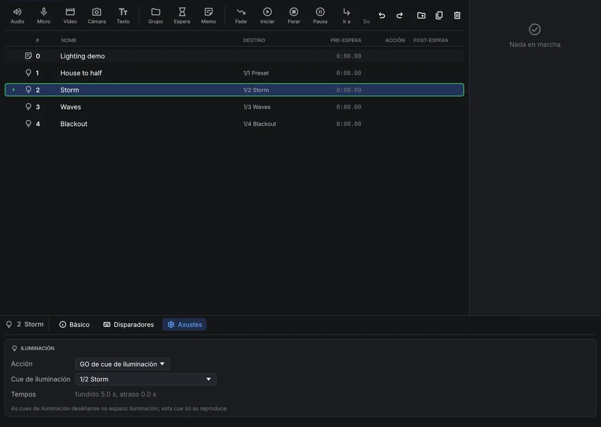
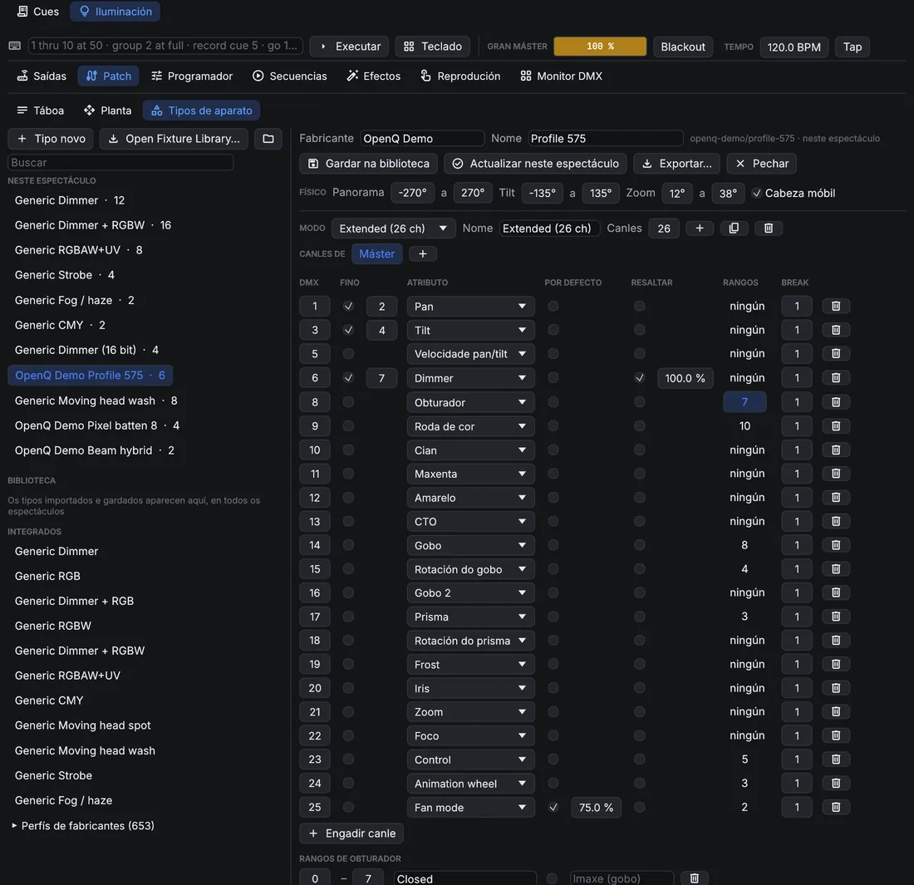
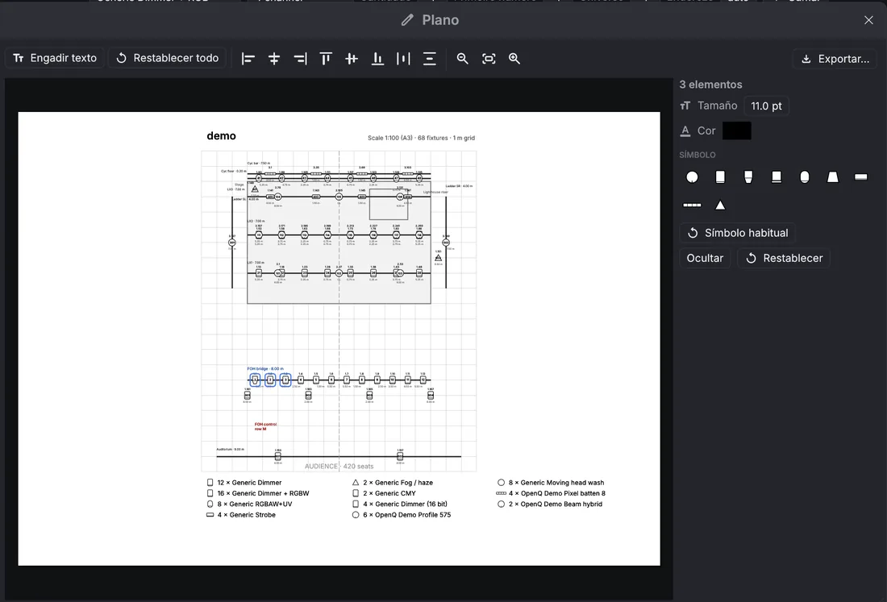
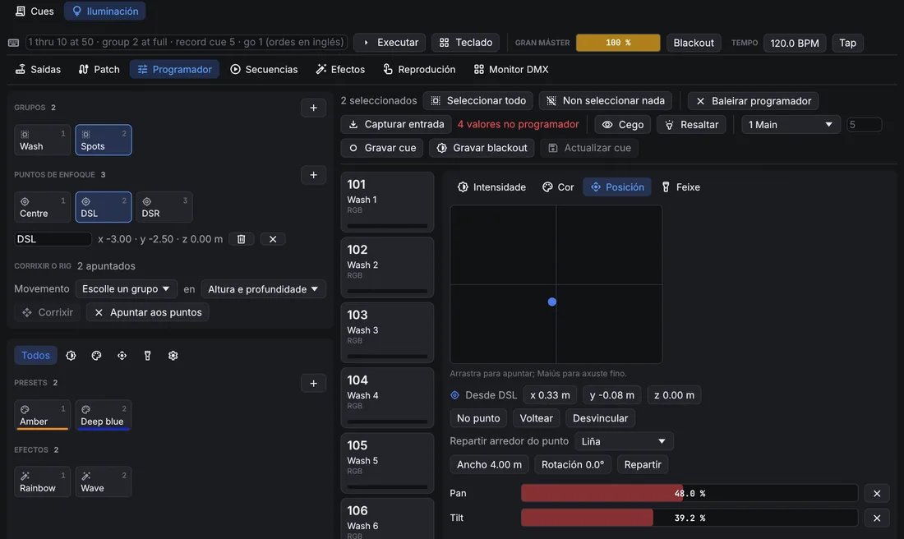
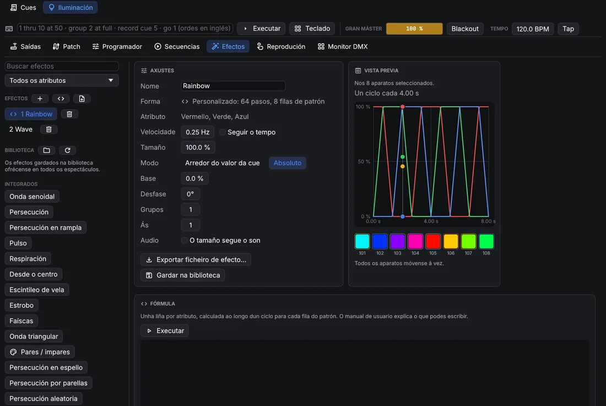
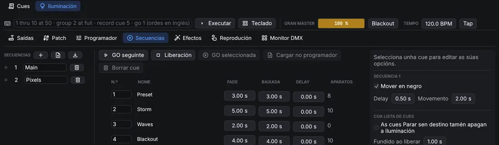
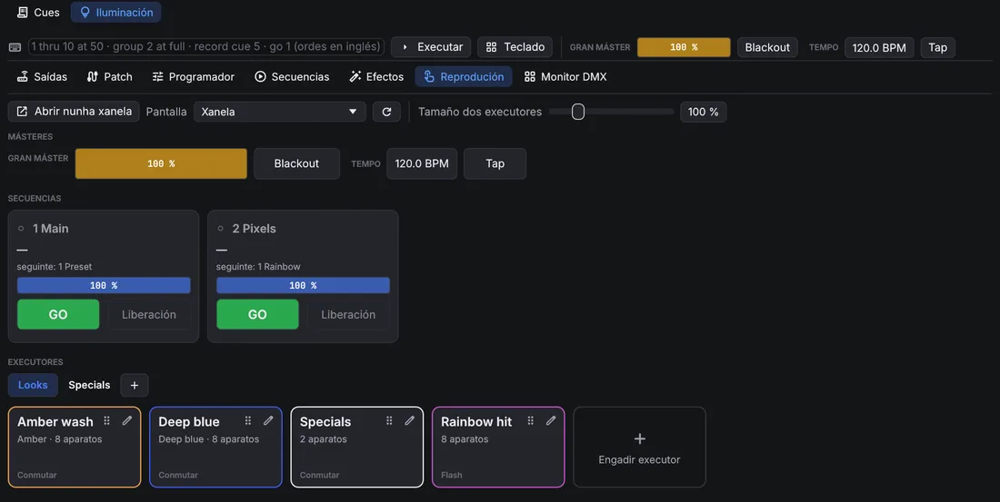
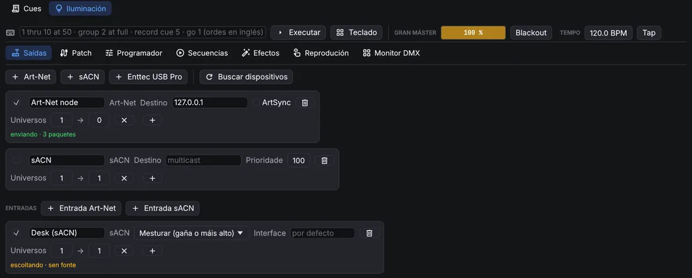
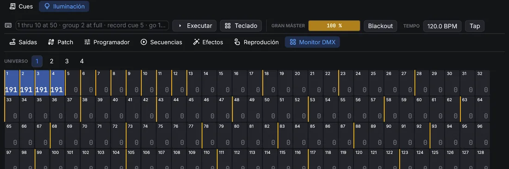

Iluminación
5.1Deseño
OpenQ controla a iluminación por DMX. O deseño de iluminación (patch, grupos, presets, efectos e secuencias de cues de iluminación) gárdase á parte da lista de cues, no espazo de Iluminación: cambia entre e Cues enriba da lista de cues. O deseño só se pode cambiar en modo edición. En modo función, o espazo de Iluminación amosa a páxina Reprodución e o monitor DMX.
Cues de luz
Unha cue de Luz da lista de cues reproduce o deseño
de iluminación; non garda niveis propios. Na súa lapela Axustes escolle a Acción: GO de cue de iluminación
lanza unha cue de iluminación dunha secuencia (amósase como secuencia/cue) cos seus propios fundidos, e
Liberación apaga unha secuencia, ou todas, no tempo indicado. As cues de luz lánzanse xunto co son e o vídeo, así que
un cambio de luz pode ir no mesmo GO ca un efecto ou un vídeo.

Unha cue de parar dirixida a unha cue de luz libera a secuencia desa cue. Con As cues Parar sen destino tamén apagan a iluminación (páxina Secuencias), as cues de parar sen destino liberan tamén todas as secuencias, co Fundido ao liberar. Parar todo e a parada inmediata (Esc) paran só o son e as imaxes: a iluminación segue como está, así que parar a lista de cues nunca deixa o escenario ás escuras.
A iluminación só funde mediante cues de luz: unha cue de iluminación funde cos seus propios tempos, e a seguinte cue de iluminación ou unha liberación seguen desde aí. As cues Fade non actúan sobre cues de luz.
Patch
A páxina Patch ten tres vistas: Táboa, Planta e Tipos de aparato. A táboa lista os aparatos. Para engadir (na Táboa ou na Planta), escolle un tipo de aparato e un modo en Engadir aparatos, indica cantos, o primeiro número de aparato, o universo e o enderezo inicial (auto colle o seguinte libre), e preme Sumar. Todas as celas da táboa pódense editar: nome, tipo, modo, universo, enderezo, posición e rotación, e a inversión de panorama ou tilt. Os enderezos que se solapan e os números repetidos avísanse enriba da táboa. Un aparato con varias entradas DMX (un break por entrada, definido no seu tipo de aparato) ten un enderezo por break: preme o seu número de canles para poñer o universo e o enderezo dos outros breaks.

Os aparatos de varias celas, como as barras LED, contrólanse tamén cela a cela: a cela 3 do aparato 101 é
101.3. Planta amosa a montaxe desde arriba. Fai clic para seleccionar (Ctrl engade), arrastra
para mover a selección, arrastra nun oco para desprazar a vista e usa a roda para achegar. Os puntos de enfoque vense como cruces verdes; arrastra un para movelo. Con aparatos seleccionados,
Colocar repárteos en liña, en arco ou en cuadrícula.

Para que a planta se pareza ao teatro real, debuxa nela: escolle Vara ou Rectángulo xunto a Debuxar e arrastra na planta. As varas son tubos, truss ou rúas, coa súa altura; os rectángulos son o escenario, tarimas ou escenografía. Fai clic nunha vara, ou no bordo dun rectángulo, para seleccionalo: arrástrao para movelo, arrastra os seus tiradores brancos para cambiar os seus extremos ou esquinas, e axusta o seu nome, coordenadas exactas e altura na fila de enriba. Supr sobre a planta bórrao. Con aparatos e unha vara seleccionados, Colgar reparte os aparatos ao longo da vara, á súa altura. Arrastra a etiqueta dunha vara ou dun rectángulo para apartala; o plano tamén a pon aí, e na fila de enriba devólvea ao seu sitio.
Tipos de aparato
OpenQ trae tipos xenéricos (dimmer, RGB, RGBW, CMY, cabezas móbiles, estrobo, fume) e unha biblioteca duns 650 perfís de fabricantes (a Open Fixture Library máis algúns GDTF de fabricantes), en Perfís de fabricantes dentro de Tipos de aparato. Busca un aparato, ábreo e usa Engadir a este espectáculo; ao gardalo créase unha copia propia. Importar aparato… (na
Táboa e na Planta) le ficheiros de Open Fixture Library (.json), GDTF (.gdtf), QLC+ (.qxf) e OpenQ
(.oqfixture). Os tipos importados cópianse no espectáculo e gárdanse na túa biblioteca de aparatos, así que
estarán no seguinte espectáculo. Tipos de aparato abre o editor: canles e os seus atributos, canles finas de 16
bits, valores por defecto, o valor que usa Resaltar e os rangos: as partes con nome dunha canle, como as
posicións dunha roda de cor ou de gobos. Un rango pode ter unha cor e unha imaxe (Imaxe (gobo)), que se ven
no despregable desa canle no programador; os ficheiros GDTF traen as imaxes dos gobos e as cores dos LED do aparato, que usa
o selector de cor. Para as cabezas móbiles, o editor fixa os ángulos de pan, tilt e zoom no valor DMX máis baixo e no máis alto (un ficheiro
que xira ao revés tráeos invertidos); os ficheiros GDTF traen ademais onde están a forquita, a cabeza e a lente, así que
OpenQ apunta desde a lente como o debuxan os visualizadores.

Os ficheiros MVR levan unha implantación dun programa a outro. Importar MVR… (na Táboa e na Planta) engade os aparatos dun ficheiro dun visualizador, un programa de CAD ou outra mesa, coas súas posicións, enderezos e estruturas (como varas e formas na planta). Os tipos de aparato búscanse polo nome no espectáculo e na túa biblioteca de aparatos; os demais saen dos ficheiros GDTF que leva o MVR. Na vista Planta, Exportar MVR… garda o patch coas posicións e o ficheiro GDTF de cada tipo, para que visualizadores e outras mesas poidan importalo.
Plano
Plano…, na vista Planta, abre o editor do plano: a páxina impresa tal como sairá, coas varas e rectángulos, os símbolos dos aparatos, números, enderezos, un título e unha lenda. As etiquetas nunca se tapan: onde os aparatos están xuntos, as súas etiquetas sepáranse.
- Arrastra calquera elemento para movelo. Un clic selecciona (Maiús engade, arrastrar sobre o papel baleiro selecciona unha zona); a columna lateral cambia o texto, o tamaño e a cor dos elementos seleccionados, ocúltaos ou devólveos ao seu sitio.
- Con varios elementos seleccionados, os botóns de aliñamento igualan os seus bordos ou centros, ou reparten tres ou máis por igual.
- Cada tipo de aparato recibe un símbolo deducido do seu nome (PAR, recorte, fresnel, cabeza móbil, panorama, estrobo, efecto…); escolle outro para todo o tipo na lenda, ou para un só aparato.
- Engadir texto pon unha nota libre na páxina.
- Exportar… gárdao como PDF (unha folla A3, á maior escala normalizada que caiba, como 1:50) ou como debuxo SVG; o tipo escóllese no diálogo de gardar.
Os cambios gárdanse co espectáculo, así que a seguinte exportación consérvaos.

5.2Programación
Programador
Selecciona aparatos nas súas fichas: un clic engade un aparato á selección (un segundo clic quítao), arrastrar por riba de varias fichas engádeas todas, e un clic dereito selecciona só ese aparato. Os grupos e a liña de ordes tamén seleccionan. O panel da dereita axusta os seus valores, cunha páxina por familia: Intensidade, Cor, Posición (arrastra no recadro para apuntar), Feixe e Control. Arrastra unha barra para fixar un valor, ou usa a roda enriba para pasos do 1 %. As canles con rangos teñen un botón por rango, por exemplo un por gobo. Os atributos que cambian de forma continua (intensidade, mestura de cor, pan e tilt, zoom, foco, iris, frost, fume…) sempre teñen unha barra; se o ficheiro do aparato nomea rangos deles, os rangos son un selector debaixo.
O selector de cor amosa todas as cores visibles e ilumina as que pode dar o aparato seleccionado: a forma entre as cores dos seus LED. As de fóra vense apagadas, e un clic aí colle a cor máis próxima que pode dar. Cada aparato mestura a cor cos seus propios LED. As cores dos LED veñen do tipo de aparato (os ficheiros GDTF tráenas); sen elas OpenQ usa cores de LED típicas, e indícao baixo o selector.

Os valores do programador mandan sobre a reprodución mentres están postos, e son o que garda Gravar cue. Baleirar programador devolve o control á reprodución.
- A columna da esquerda ten os grupos, presets e efectos como tarxetas. Os botóns de enriba amosan só os presets e efectos dunha familia (intensidade, cor, posición, feixe, control).
- Grupos: garda a selección como grupo; fai clic nun grupo para seleccionalo (Ctrl engade); con clic dereito sobrescríbese ou bórrase.
- Presets: garda os valores dos aparatos seleccionados como preset: todos os atributos, ou só a familia que amosa o filtro. Ao facer clic nun preset aplícase. As cues gardan unha ligazón ao preset, así que ao cambialo cambian todas as cues que o usan.
- Abanico reparte un valor pola selección, por exemplo de 0 a 100 %, tamén desde o centro cara a fóra.
- Cego permite programar sen cambiar a saída. Resaltar pon os aparatos seleccionados en branco aberto e a tope (non se grava); a frecha percórreos un a un.
- Capturar entrada leva ao programador o que reciben as entradas DMX, para gravar aquí un estado feito noutra mesa.
Puntos de enfoque
Un punto de enfoque é un lugar do escenario con nome, como o centro, as esquinas do proscenio ou unha tarima. As cues apuntan as cabezas móbiles a un punto, non a valores de pan e tilt: OpenQ calcula o pan e o tilt a partir da posición, a rotación e os ángulos de cada aparato. Move o punto (arrástrao en Patch → Planta) ou un aparato, e todas as cues que apuntan a el séguenno.

- Crear un: apunta aparatos a un lugar a man e despois en Puntos de enfoque pon alí un punto (no chan para un aparato, onde se cruzan os feixes para varios).
- Apuntar a un: fai clic na tarxeta do punto (ou
point 2na liña de ordes). Os aparatos seleccionados xiran cara a el, e a fila baixo as tarxetas cambia o seu nome ou bórrao. - Apuntar ao lado: move a man un aparato que apunta a un punto e conserva o punto: a páxina Posición amosa o desprazamento desde o punto (x ao longo do ancho, y profundidade, z altura), e a cue segue o punto. No punto volve poñer o desprazamento a 0, Desvincular garda o apuntado como pan e tilt normais, Voltear chega ao mesmo sitio ao revés (pan media volta, tilt ao outro lado).
- Repartir arredor do punto (dous aparatos ou máis): coloca os aparatos seleccionados arredor do seu punto en Liña, Arco ou Círculo, na orde en que se seleccionaron, co seu ancho ou raio e a súa rotación. A cue conserva a forma e segue o punto.
Corrixir o rig: cando a montaxe real non colga onde di o patch, apunta aparatos a un punto e móveos a man ata o sitio real. Escolle o grupo que colga xunto (unha vara ou un truss) e que eixes corrixir (altura, altura e profundidade, ou todos), e Corrixir move eses aparatos no patch, e a vara do plano da que colgan, para que os seus feixes cheguen aos puntos. Todas as cues que apuntan a puntos séguenno; os puntos quedan onde están. Apuntar aos puntos devolve os aparatos movidos aos seus puntos.
Liña de ordes e teclado
A liña de ordes, enriba das páxinas, acepta ordes ao estilo dunha mesa (en inglés); Teclado abre teclas en
pantalla para unha pantalla táctil (Borrar liña baleira a liña de ordes). As palabras pódense abreviar a dúas letras (th, gr, rec).
| Orde | Fai |
|---|---|
1 thru 10 at 50 | Selecciona os aparatos 1 a 10 ao 50 % de intensidade. > tamén significa thru, @ significa at. |
101.1 thru 101.12 at 80 | As celas 1 a 12 do aparato 101. |
group 2 + 7 - 3 at full | O grupo 2, máis o aparato 7, menos o 3, a tope. out é 0. |
1 thru 4 preset 3 | Aplica o preset 3. |
effect 2 | Lanza o efecto 2 na selección. |
201 thru 208 point 2 | Apunta a selección ao punto de enfoque 2 (tamén at point 2). |
gobo star, wheel 3 | Escolle un rango polo nome (abonda o principio) ou polo número. |
record cue 5 / 2 | Grava o programador como cue 5 da secuencia 2. Tamén record group 4, record preset 6. |
update, clear, blind, highlight | O mesmo ca os botóns. |
go 2, go cue 5 / 2, release 2 | Reproduce secuencias. |
delete cue 5 / 2 | Borra unha cue, un grupo ou un preset. |
Efectos
Un efecto move un atributo dun conxunto de aparatos cunha forma de onda: seno, triángulo, cadrada, ramplas, aleatoria, ou un círculo para panorama e tilt. A Velocidade vai en Hz, ou por pulso con Seguir o tempo. Tamaño e Base fixan a oscilación; vai arredor do valor da cue ou, con Absoluto, arredor da base. O Desfase escalona os aparatos, Grupos move varios aparatos xuntos e Ás reflicte o debuxo. A vista previa amosa o resultado nos aparatos. Con O tamaño segue o son o efecto medra co volume ao que soa OpenQ: Ganancia di canto, Mínimo canto queda en silencio, e a barra do lado amosa o nivel do momento.

Lanza un efecto desde o programador (os efectos ou effect 2) e grávao nunha cue. Segue funcionando nas cues
seguintes ata que unha cue o pare.
Os efectos compártense como ficheiros .oqfx: Exportar ficheiro de efecto… escribe un e o botón
da lista de efectos impórtaos. Gardar na biblioteca pon un
efecto na túa biblioteca de efectos, que todos os espectáculos ofrecen en Biblioteca.
Efectos de fórmula
Para debuxos que as formas de onda non poden facer, escribe unha fórmula. Preme (Novo efecto con fórmula) na lista de efectos, edita a fórmula na tarxeta Fórmula e preme Executar (ou Ctrl+Intro). OpenQ converte a fórmula nunha táboa: para cada fila do patrón e cada paso dun ciclo, fixa os atributos que nomeas. O primeiro aparato reproduce a fila 0, o seguinte a fila 1 e así sucesivamente, volvendo empezar despois da última fila. A velocidade, o tamaño, o desfase e os demais axustes séguense aplicando enriba. Unha fórmula é só aritmética: non pode abrir ficheiros nin repetir bucles, e nunca se executa durante a función; só se reproduce a táboa que creou.
# Un arco da vella que percorre oito aparatos, cun deslizador para a saturación.
param sat 1 0..1
effect "Rainbow run" steps 64 width 8 smooth
red, green, blue = hsv(t + row / width, sat)Unha instrución por liña; # empeza un comentario e as maiúsculas dan igual. As palabras da fórmula están en
inglés.
| Liña | Que fai |
|---|---|
param sat 1 0..1 | Un deslizador na tarxeta Fórmula: nome, valor inicial e rango (0 a 1 se
non se indica). Engade int para números enteiros. Os deslizadores van antes do primeiro efecto; ao movelos a
fórmula calcúlase de novo. |
effect "Nome" steps 64 width 8 smooth | Empeza un efecto: mostras por ciclo (1 a 4096),
filas do patrón (1 a 512) e smooth para fundir entre mostras (quítao para persecucións que saltan). Unha
fórmula pode crear varios efectos: o primeiro é o que editas, os demais engádense á lista. |
let k = sine(t) | Garda un valor para as liñas de debaixo. |
red, green, blue = … | Fixa atributos, cada un unha vez por efecto: dimmer,
red, pan, tilt, zoom, gobo_rotation, extra3…
Os niveis van de 0 a 1 (o que se sae recórtase). |
Os valores son números: t vai de 0 a 1 ao longo do ciclo, step conta os pasos (desde 0),
row é a fila do patrón, steps e width son os tamaños do efecto, e ademais os
deslizadores e os nomes de let. Usa + - * / % ^, parénteses, comparacións
(< <= == != >= >, que dan 1 ou 0) e and, or, not.
| Función | Resultado |
|---|---|
sine(x), triangle(x),saw(x), ramp_down(x) | As formas de
onda, de 0 a 1 nun ciclo (x en ciclos, normalmente t). |
square(x, duty) | 1 durante a primeira parte duty do ciclo (a metade se non se
indica) e logo 0. |
wave(x) | Unha onda senoidal de −1 a 1, x en ciclos; wave(x + 0.25) é
o coseno. |
hsv(ton, saturación, valor) | Vermello, verde e azul dunha cor (ton en voltas da roda de
cor). Dá tres valores, así que enche tres atributos: red, green, blue = hsv(t). |
pick(i, a, b, c…) | O valor número i da lista, desde 0 (volve empezar ao
final). |
if(condición, a, b) | a cando a condición non é 0; se non, b. |
noise(n, seed) | Un número aleatorio fixo de 0 a 1 para o número enteiro n (e
seed): sempre o mesmo. |
min(a, b…), max(a, b…) | O valor máis pequeno ou o máis grande. |
clamp(x, baixo, alto) | x dentro de baixo e alto (0 e 1 se non se indican). |
lerp(a, b, k) | De a (k = 0) a b (k = 1). |
smoothstep(x) | De 0 a 1 con inicio e final suaves. |
abs, floor, round, frac | Sen signo, arredondado cara abaixo, arredondado, a parte decimal. |
# Aparatos alternos, que se intercambian en cada metade do ciclo.
effect "Odd / even" steps 2 width 2
dimmer = if(step == row, 1, 0)
# Cabezas veciñas que se moven en sentidos opostos (Modo: Arredor do valor da cue).
effect "Scissors" steps 64 width 2 smooth
pan = 0.5 + pick(row, 0.5, -0.5) * wave(t)Un erro aparece baixo o editor coa súa liña e columna, e o efecto conserva a súa última táboa. Os espectáculos de OpenQ 0.3 con efectos de script de Python séguenos reproducindo; o script antigo amósase baixo a tarxeta Fórmula para reescribilo como fórmula, ou en Python como se explica abaixo.
Efectos feitos en Python
Algúns debuxos precisan un programa de verdade: un valor que depende do paso anterior (un paseo aleatorio, un debuxo que
medra), bucles ou datos doutro sitio. Escríbeos en Python no teu ordenador e gárdaos como ficheiro de efecto. OpenQ impórtao
como calquera outro ficheiro .oqfx, como datos: dentro de OpenQ non se executa nada. Serve calquera Python 3,
sen módulos extra.
- Garda isto como
wander.py. Fai que catro cabezas móbiles deambulen ao chou e volvan a onde empezaron:import json import random def save_effect(path, name, attributes, steps, width, level, smooth=True, **settings): """Write an OpenQ effect file (.oqfx). level(row, step) returns one level (0 to 1) per attribute. """ n = len(attributes) values = [0.0] * (n * steps * width) for row in range(width): for step in range(steps): for col, v in enumerate(level(row, step)): at = (row * n + col) * steps + step values[at] = min(1.0, max(0.0, float(v))) table = {"attributes": attributes, "steps": steps, "width": width, "smooth": smooth, "values": values} effect = {"name": name, "shape": "Custom", "attribute": attributes[0], "table": table} effect.update(settings) with open(path, "w", encoding="utf-8") as f: json.dump({"openq_effect": 1, "effect": effect}, f) def walk(steps, seed): """A random walk that ends where it started (no jump).""" rnd = random.Random(seed) x, points = 0.5, [] for _ in range(steps): x = min(1.0, max(0.0, x + rnd.uniform(-0.06, 0.06))) points.append(x) drift = points[-1] - points[0] return [p - drift * k / steps for k, p in enumerate(points)] STEPS, HEADS = 128, 4 pan = [walk(STEPS, seed=row) for row in range(HEADS)] tilt = [walk(STEPS, seed=100 + row) for row in range(HEADS)] save_effect("wander.oqfx", "Wander", ["Pan", "Tilt"], STEPS, HEADS, lambda row, step: (pan[row][step], tilt[row][step]), speed=0.05, relative=True, size=0.5, spread=0) - Execútao:
python3 wander.py(py wander.pyen Windows). Escribewander.oqfxno mesmo cartafol. - En OpenQ, vai a , preme (Importar ficheiros de efecto) e escolle o ficheiro. O efecto engádese á lista; lánzao en catro cabezas.
save_effect é a parte que hai que conservar para os teus propios efectos:
- attributes: os nomes que garda OpenQ, en inglés e con maiúsculas:
Dimmer,Red,Green,Blue,White,Pan,Tilt,Zoom,Iris,GoboRotation,Extra3… - steps: mostras por ciclo (1 a 4096); width: filas do patrón (1 a 512). Como moito 16 atributos e un millón de valores.
- level(row, step): devolve un nivel de 0 a 1 por atributo, na mesma orde.
- smooth: fundir entre mostras (
Falsemantén cada unha, para persecucións). - O resto son os axustes do efecto, todos opcionais:
speed(Hz),sync(seguir o tempo),sizeebase(0 a 1),relative(True= arredor do valor da cue),spread(graos),groups,wings. Todos se poden cambiar despois en OpenQ.
O último paso dun ciclo enlaza directamente co primeiro. Fai que
coincidan, como fai walk, ou o efecto dará un salto en cada ciclo. OpenQ comproba cada ficheiro que importa e
rexeita os que teñen tamaños ou valores incorrectos.
5.3Reprodución e saídas
Secuencias
Unha secuencia é unha pila de cues. As cues de iluminación son de seguimento (tracking): unha cue só garda o que cambia, e o demais segue como o deixaron as cues anteriores. Cada cue ten un fade, un fade de baixada á parte para a intensidade que baixa, e un delay.

- Tempos por familia dá á cor, á posición ou ao feixe o seu propio fade e delay.
- Só esta cue: os seus cambios non se arrastran; a cue seguinte volve ao que había antes.
- Bloquear garda na cue todos os valores que arrastra, así que editar cues anteriores xa non a cambia. Unha cue bloqueada amosa un cadeado na lista e o botón di Bloqueado; prémeo outra vez para que eses valores volvan arrastrarse.
- Mover en negro (por secuencia): os aparatos apagados collen a posición, a cor e o feixe da súa seguinte cue antes de acenderse, tras o delay indicado.
- Cargar no programador recupera unha cue para editala; Actualizar cue, na páxina Programador, garda os cambios.
Os ficheiros USITT ASCII (.asc) traen cues doutra mesa: o botón
xunto a Secuencias le o patch, as cues, os grupos e os submásteres dun
ficheiro, e garda o deseño como un. O formato só leva intensidades: a cor, a posición e
os efectos quedan fóra, e os tempos de follow e link pérdense.
Reprodución
A páxina Reprodución é desde onde se leva a iluminación, nos dous modos, con tarxetas grandes para unha pantalla táctil:
- Másteres: o gran máster, o blackout e o tempo dos efectos (escríbese ou márcase con Tap).
- Secuencias: unha tarxeta por secuencia, coa súa cue actual e a seguinte, un fader de nivel, GO e Liberación.
- Executores: botóns que poñen un estado enriba das secuencias, como a máquina de fume ao 80 %, un estrobo ou un especial. En modo edición, Engadir executor crea un e o lapis edítao: o seu nome e cor, un predefinido sobre uns aparatos (Usar seleccionados toma a selección do programador, ou escolle un grupo), e/ou Gardar o programador para os valores e efectos do programador. Entra e sae no seu Fade; Conmutar acéndeo e apágao con cada pulsación, Flash mantéñeo aceso só mentres se preme.
Os executores están en páxinas: as lapelas de enriba, con para unha páxina nova; un clic dereito nunha lapela renoméaa ou elimínaa. Os executores dunha páxina que non se ve seguen activos. En modo edición, arrastra un executor pola súa asa sobre outro para reordenalos, ou sobre unha lapela para levalo a esa páxina. Tamaño dos executores agranda ou achica as tarxetas.
Abrir nunha xanela pon a páxina Reprodución nunha xanela propia; escolle unha Pantalla para que ocupe unha pantalla táctil. Cada ordenador lembra se a súa xanela está aberta e onde, así que volve tras reiniciar.

Superficies de control
Un controlador MIDI ou unha aplicación OSC (TouchOSC, por exemplo) poden manexar os executores. En escolle a entrada MIDI deste ordenador e engade asignacións: preme Aprender novo (ou o control dunha asignación), move un fader ou preme un botón e escolle que fai. Banco de executores engade dunha vez faders en CC 1–8 e botóns nas notas 36–43. Os executores numéranse polo seu lugar na lista de secuencias.
- Faders: nivel de executor, gran máster.
- Botóns: GO, liberar e flash de executor (a tope mentres se mantén), executores de reprodución (os botóns da páxina Reprodución), páxina seguinte e anterior, blackout, liberar todo, tap tempo, e o GO e Parar todo da lista de cues. Un botón actúa unha vez por pulsación, mande notas, CC 127/0, cambios de programa ou OSC 1/0. As cues tamén poden dispararse por MIDI por si mesmas (ver Disparadores MIDI).
- Páxinas: cun tamaño de páxina de, por exemplo, 8, os oito faders do controlador levan as secuencias 1–8 na primeira páxina e as 9–16 na seguinte; os botóns de páxina pasan dunha a outra, e a páxina Reprodución amosa a mesma páxina de executores.
- Recollida suave: un fader que non coincide co seu nivel (moveuse na pantalla, ou cambiou a páxina) non fai nada ata alcanzalo, así que nada salta.
- Retorno: escolle unha saída en Retorno MIDI e as luces dos botóns e os faders motorizados seguen o espectáculo. Para unha app OSC, pon en Retorno OSC o porto UDP no que escoita: os niveis e as luces envíanse á app que mandou o último control.
- MIDI clock: con Os efectos seguen o seu tempo, o tempo dos efectos segue o reloxo da entrada MIDI (dun programa de DJ ou unha caixa de ritmos); ao lado vense os BPM que le.
As asignacións gárdanse co espectáculo; a entrada MIDI é do ordenador, así que un dispositivo remoto pode usar o seu propio
controlador (os seus movementos van ao dispositivo principal). As asignacións OSC chegan polo
receptor OSC, que ademais entende os enderezos /light/… sen asignación.
Saídas e entradas
Na páxina Saídas engade a onde vai o DMX: Art-Net (o enderezo dun nodo, ou difusión; Buscar dispositivos lista os nodos da rede), sACN (multicast ou un enderezo unicast, con prioridade) ou unha interface Enttec DMX USB Pro (ou compatible). Cada saída envía unha lista de universos: o universo do patch á esquerda e o número no cable á dereita (Art-Net conta desde 0). Cada saída funciona pola súa conta, así que un dispositivo lento ou desconectado non frea os demais, e un perdido vólvese abrir só.

As entradas reciben Art-Net ou sACN doutra mesa. Cada unha mestura coa saída de OpenQ (gaña o valor máis alto), a substitúe nos universos que recibe, ou queda só para capturar. Se varias mesas envían o mesmo universo sACN, gaña a de máis prioridade. OpenQ ignora os seus propios paquetes, así que unha saída en difusión non volve entrar por unha entrada.
Unha saída Art-Net pode mandar ArtSync tras cada fotograma, para que os nodos que o admiten cambien todos os seus universos á vez. Maiús+clic nun nodo da lista Nodos envíalle os universos que emite; un aviso indica cando a saída manda un universo que o nodo escollido non ten. Unha entrada Art-Net responde ás mesas que buscan nodos (ArtPoll), así que as mesas que só envían aos nodos que atopan tamén envían a OpenQ.
Monitor DMX
O monitor DMX amosa cada canle dun universo tal como sae, entradas incluídas. Unha liña amarela marca onde empeza cada aparato.

Dispositivos remotos e visualizadores
Un dispositivo remoto recibe o deseño de iluminación e os seus cambios, e amosa os executores e a saída DMX do dispositivo principal; o seu GO e os seus faders actúan no dispositivo principal. Un dispositivo co rol de edición tamén pode cambiar o deseño. Un visualizador pode seguir a OpenQ do mesmo xeito, ou ler o DMX por Art-Net ou sACN e a montaxe dun MVR exportado.
(tamén en Patch → Planta) amosa a montaxe en OQVis, o visualizador 3D que se instala con OpenQ: OpenQ garda o patch como ficheiro MVR e abre OQVis con el. Se o escolles outra vez mentres OQVis está aberto, só se reescribe o ficheiro e OQVis vólveo cargar. OQVis recibe o DMX por Art-Net, sACN ou o seu propio enlace con OpenQ. Se OpenQ non atopa OQVis, pregunta onde está o programa e lémbrao.